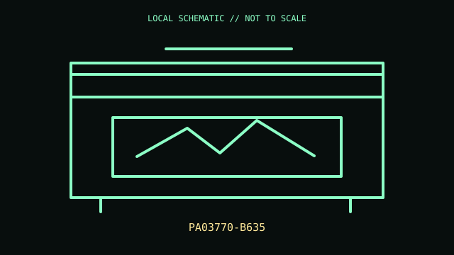

[ IMAGING AND AUDIO-CAPTURE PERIPHERALS // IDENTIFIED COMPONENT ]
Ricoh ScanSnap iX1600
Desktop duplex document scanner with automatic feeder, touchscreen, and wired or wireless host connection.

MODEL IDENTIFICATION: Exact model / identifier: PA03770-B635. Confirm label, package suffix, region, and revision against manufacturer documentation.
Model specifications
| Catalog subcategory | Imaging and audio-capture peripherals |
|---|---|
| Exact model / ID | PA03770-B635 |
| Physical mechanism and primary specifications | Duplex color scanning up to 40 ppm / 80 ipm at specified conditions; 50-sheet ADF; 4.3-inch touchscreen; USB 3.2 Gen 1 and Wi-Fi; AC-powered. Throughput varies by page/settings. |
| Host, interface, and driver caveats | Uses ScanSnap Home software/app and supported host/network setup; not a conventional TWAIN/WIA device for arbitrary scan applications. SKU is region/package specific. |
| Revision identification | Record the complete printed SKU/PID, hardware revision, regional layout, and supplied accessories; similarly named variants may use different interfaces, drivers, or components. |
Preservation and service notes
Clean feed rollers and glass with approved materials; avoid damaged, wet, or stapled originals. Record counter/roller condition and preserve guides and AC supply.
Record unit condition, accessories, host OS, software/firmware version, and test conditions separately from manufacturer-published specifications.
Primary manufacturer documentation
- Ricoh/PFU ScanSnap iX1600 product pageManufacturer product or support documentation; verify exact model and regional revision against the device label.
- ScanSnap support and manualsManufacturer product or support documentation; verify exact model and regional revision against the device label.
Support pages can change; preserve the applicable manual and its revision with the physical equipment record.